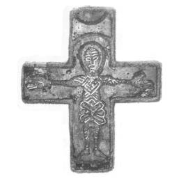

Catalog › CE-0043 · LOV1999-37
Placă anterioară de cruce cu Hristos aurit și email albastru
sec. XI (cu semn de întrebare) (1001–1100) · împrejurimile Pécs-ului (nesigur), Baranya (Kom.), Ungaria · Muzeul Național Maghiar, Budapesta, inv. 1867.51.IV.1
single valve of a reliquary cross, bronz; c. XI (cu semn de întrebare) (1001–1100); found at împrejurimile Pécs-ului (nesigur), Baranya (Kom.), Ungaria; kept at Muzeul Național Maghiar, Budapesta.


Identificare
- Categorie
- Valvă izolată
- Material
- Bronz
- Tehnică
- Turnare în relief; Aurire; Email
- Dimensiuni
- Î 67 × L 53 mm
Iconografie
- Avers
- Răstignirea (Hristos cu perizoma)
- Descriere avers
- Hristos în poziție frontală, cu nimb oval, brațele întinse drept, perizoma legată ca un șnur; corp și brațe redate prin linii drepte, stilizate; picioarele ușor depărtate, cu degetele ascuțite întoarse în afară. Fond acoperit cu email albastru; părțile laterale, corpul și chenarul sunt aurite.
- Descriere revers
- Spatele este gol, turnat.
Datare și atribuire
- Datare
- sec. XI (cu semn de întrebare) (1001–1100)
- Centru
- Necunoscut
Descoperire
- Localitate
- împrejurimile Pécs-ului (nesigur)
- Regiune
- Baranya (Kom.)
- Țară
- Ungaria
- Context
- Colecție (fără context)
- Coordonate
- 47.4913° N, 19.0626° E
- Precizia locului
- Loc de păstrare (loc de descoperire incert)
Păstrare și referințe
- Colecție
- Muzeul Național Maghiar, Budapesta
- Nr. inventar
- 1867.51.IV.1
- Bibliografie
- Zs. Lovag, Mittelalterliche Bronzegegenstände des Ungarischen Nationalmuseums (Catalogi Musei Nationalis Hungarici, Series Archaeologica III), Budapest, 1999, p. 30–31, cat. nr. 37, reprodusă la Abb. 37 (planșele, p. 136). Bibliografie citată în sursă: Lovag 1994, II-4; Nechvátal 1979, 215, Abb. 1.
- Figura
- Abb. 37
- Planșe
- Lovag 1999, planșele, p. 136
- Observații
- Datare după Lovag: sec. XI (cu semn de întrebare). XI (cu semn de întrebare). Origine Boemia, cu semn de întrebare în sursă. Locul de descoperire este dat în sursă ca incert („angeblich”); dăruită muzeului de Antal Horváth. La Muzeul Național din Praga se află trei cruci foarte asemănătoare, găsite în 1858 la Opočnice, împreună cu trei cruci de bronz de tip Țara Sfântă; originea lor este disputată (bizantină sau renano-occidentală). Placa din spate și inelul de agățare lipsesc. Locul descoperirii nu e cunoscut cu precizie; punctul de pe hartă marchează locul de păstrare (Muzeul Național Maghiar), nu locul descoperirii. Coordonate: nu sunt date în sursă.
Citare: Corpus Encolpiorum, CE-0043, Placă anterioară de cruce cu Hristos aurit și email albastru, https://vitaliejosanu1979-ux.github.io/primul-meu-proiect/piese/LOV1999-37/ (accesat 2026-10-17).